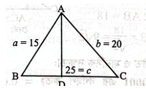
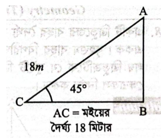
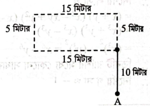

বৈশ্বিক উষ্ণায়ন, জীববৈচিত্র্য, অপটিক্যাল ফাইবার, বায়োমেট্রিক্স, এইচটিএমএল ও শক্তি রূপান্তর
৫টি গ্রুপ
৫
সর্বমোট
৩৯টি প্রশ্ন
২০০ নম্বর
PART 1
প্রামাণ্য ইন্টারেক্টিভ রিভিশন নোট ও সূত্রাবলি
বইয়ের বিশদ সমাধান ও প্রশ্নভাণ্ডার থেকে সংকলিত দ্রুত রিভিশন সহায়ক কনসেপ্ট ম্যাপ ও সূত্রসমূহ
📌 বাংলা ব্যাকরণ: শব্দের অর্থগত শ্রেণি ও ষত্ব-বিধান
অর্থগতভাবে শব্দ ৩ প্রকার:
১. যৌগিক: ব্যুৎপত্তি ও ব্যবহারিক অর্থ অভিন্ন (কর্তব্য, মধুর, গায়ক)।
২. রূঢ় / রূঢ়ি: প্রত্যয়/উপসর্গ যুক্ত হয়ে বিশিষ্ট ভিন্ন অর্থ প্রকাশ করে (সন্দেশ, হস্তী, গবেষণা, বাঁশি)।
৩. যোগরূঢ়: সমাসনিষ্পন্ন হয়ে একটি সুনির্দিষ্ট অর্থ বোঝায় (পঙ্কজ, জলধি, রাজপুত, মহাযাত্রা)।
ষত্ব-বিধানের সারকথা: ঋ-কারের পর 'ষ' (ঋষি, বৃষ্টি); র/রেফের পর 'ষ' (বর্ষা); ট-বর্গের পূর্বে যুক্ত 'ষ' (কষ্ট, নষ্ট); নিঃ/আবিঃ/চতুঃ উপসর্গের পর ক/প থাকলে 'ষ' (আবিষ্কার, চতুষ্পদ)।
💡 English Correction & Idiom Flashcard
Risk: Verb risk-এর পর Gerund বসে (Risk leaving, not risk to leave).
Preferable: 'preferable to' বসে, more বা than বসে না।
Inform: সরাসরি ব্যক্তি বসে (Inform your father, not inform to).
Persist: Persist in doing something.
Comparison: Population of Khulna is less than that of Dhaka.
Pull down: দুর্বল করা বা ভগ্নস্বাস্থ্য হওয়া।
Prevail upon: কাউকে যুক্তি দিয়ে রাজি করানো।
Pride goes before destruction: অতি দর্পে হত লঙ্কা।
আটলান্টিক সনদ: ১৪ আগস্ট ১৯৪১ (রুজভেল্ট ও চার্চিল)।
অপটিক্যাল ফাইবার: আলোর পূর্ণ অভ্যন্তরীণ প্রতিফলন (কোর, ক্ল্যাডিং, জ্যাকেট)।
PART 2
বিগত বছরের প্রামাণ্য প্রশ্নব্যাংক ও ইন্টারঅ্যাক্টিভ কুইজ
অনুশীলন মোডে সমাধান দেখুন অথবা পরীক্ষা মোডে সময় মেপে নিজে মূল্যায়ন করুন
মূল্যায়ন স্কোর: ০ সঠিক | ০ আংশিক | ০ ভুল (মোট 39)
প্রশ্ন 01বাংলা | প্রবন্ধ রচনাপূর্ণমান: 20
প্রবন্ধ লিখুন: কারিগরি শিক্ষার ভবিষ্যৎ
আত্মমূল্যায়ন:
💡 প্রামাণ্য সমাধান ও বিশদ ব্যাখ্যা দেখুন
কারিগরি শিক্ষার ভবিষ্যৎ
ভূমিকা: একবিংশ শতাব্দী দক্ষতা ও প্রযুক্তির যুগ। বর্তমান বিশ্বে একটি দেশের অর্থনৈতিক উন্নয়ন, শিল্পায়ন এবং বৈশ্বিক প্রতিযোগিতায় টিকে থাকার প্রধান শর্ত হলো দক্ষ মানবসম্পদ। শুধু সনদভিত্তিক শিক্ষা দিয়ে আজকের কর্মবাজারের চাহিদা পূরণ করা সম্ভব নয়; প্রয়োজন কর্মমুখী ও দক্ষতাভিত্তিক শিক্ষা। এই বাস্তবতায় কারিগরি শিক্ষা (Technical and Vocational Education and Training - TVET)-এর ভবিষ্যৎ আজ আগের যেকোনো সময়ের তুলনায় অনেক বেশি উজ্জ্বল ও সম্ভাবনাময়।
কারিগরি শিক্ষার ধারণা: কারিগরি শিক্ষা হলো এমন একটি শিক্ষাব্যবস্থা, যার মাধ্যমে শিক্ষার্থীদের নির্দিষ্ট পেশা বা শিল্পখাতে কাজ করার জন্য ব্যবহারিক জ্ঞান, প্রযুক্তিগত দক্ষতা ও পেশাগত প্রশিক্ষণ প্রদান করা হয়। এ শিক্ষার মাধ্যমে একজন ব্যক্তি শুধু চাকরিপ্রার্থী নন, বরং একজন দক্ষ কর্মী, উদ্ভাবক এবং উদ্যোক্তা হিসেবে গড়ে ওঠেন। প্রকৌশল, তথ্যপ্রযুক্তি, বিদ্যুৎ, ইলেকট্রনিক্স, কৃষি, স্বাস্থ্যসেবা, অটোমোবাইল, নির্মাণ, গার্মেন্টস, পর্যটন, মেরিন প্রযুক্তি, নবায়নযোগ্য জ্বালানি, গ্রাফিক ডিজাইন ও ফ্রিল্যান্সিংসহ অসংখ্য ক্ষেত্রে কারিগরি শিক্ষার প্রয়োগ রয়েছে।
বর্তমান বিশ্বে কারিগরি শিক্ষার গুরুত্ব: বর্তমানে বিশ্বের অধিকাংশ উন্নত দেশ তাদের অর্থনৈতিক প্রবৃদ্ধির ভিত্তি হিসেবে দক্ষ জনশক্তিকে গুরুত্ব দিচ্ছে। জার্মানি, দক্ষিণ কোরিয়া, জাপান, সিঙ্গাপুর, চীন ও মালয়েশিয়ার শিল্পোন্নয়নের পেছনে শক্তিশালী কারিগরি শিক্ষাব্যবস্থার বড় অবদান রয়েছে। চতুর্থ শিল্পবিপ্লবের ফলে কৃত্রিম বুদ্ধিমত্তা (AI), রোবোটিক্স, ইন্টারনেট অব থিংস (IoT), ক্লাউড কম্পিউটিং, ডেটা অ্যানালিটিক্স, সাইবার নিরাপত্তা এবং অটোমেশনের মতো নতুন নতুন প্রযুক্তিনির্ভর পেশার সৃষ্টি হচ্ছে। ফলে কর্মবাজারে ডিগ্রির পাশাপাশি প্রযুক্তিগত দক্ষতাই সবচেয়ে মূল্যবান সম্পদে পরিণত হয়েছে।
বাংলাদেশের প্রেক্ষাপটে কারিগরি শিক্ষার গুরুত্ব: বাংলাদেশ বিশ্বের অন্যতম জনবহুল দেশ। প্রতি বছর লক্ষ লক্ষ তরুণ কর্মবাজারে প্রবেশ করছে। কিন্তু তাদের একটি বড় অংশ প্রয়োজনীয় প্রযুক্তিগত দক্ষতার অভাবে কাঙ্ক্ষিত কর্মসংস্থান পায় না। এই অবস্থায় কারিগরি শিক্ষা বেকারত্ব কমাতে এবং দক্ষ মানবসম্পদ গড়ে তুলতে গুরুত্বপূর্ণ ভূমিকা রাখতে পারে। কারিগরি শিক্ষায় শিক্ষিত তরুণরা সহজেই দেশে ও বিদেশে কর্মসংস্থানের সুযোগ পায় অথবা আত্মকর্মসংস্থানের মাধ্যমে উদ্যোক্তা হিসেবে আত্মপ্রকাশ করতে পারে।
কারিগরি শিক্ষার বর্তমান অবস্থা ও প্রাতিষ্ঠানিক উদ্যোগ: বাংলাদেশ কারিগরি শিক্ষা বোর্ড (BTEB), কারিগরি শিক্ষা অধিদপ্তর (DTE) এবং জাতীয় দক্ষতা উন্নয়ন কর্তৃপক্ষ (NSDA) দেশের কারিগরি শিক্ষা ও দক্ষতা উন্নয়নে গুরুত্বপূর্ণ ভূমিকা পালন করছে। সরকার পলিটেকনিক ইনস্টিটিউট, টেকনিক্যাল স্কুল ও কলেজ, ভোকেশনাল প্রশিক্ষণ কেন্দ্র এবং বিভিন্ন দক্ষতা উন্নয়ন কর্মসূচির মাধ্যমে কারিগরি শিক্ষার সম্প্রসারণে কাজ করছে। কারিগরি শিক্ষার প্রতি সামাজিক দৃষ্টিভঙ্গির ইতিবাচক পরিবর্তন ঘটছে এবং ছাত্র-ছাত্রীদের ভর্তির হার ক্রমশ বৃদ্ধি পাচ্ছে।
বৈদেশিক কর্মসংস্থান ও রেমিট্যান্সে ভূমিকা: বাংলাদেশের অর্থনীতিতে প্রবাসী আয় অন্যতম প্রধান চালিকাশক্তি। প্রতি বছর বিপুল সংখ্যক বাংলাদেশি বিদেশে কর্মসংস্থানের উদ্দেশ্যে যান। কিন্তু দক্ষতার অভাবে অনেকে কম মজুরির কাজ করতে বাধ্য হন। আন্তর্জাতিক মানসম্পন্ন কারিগরি শিক্ষা ও দক্ষতা অর্জনের মাধ্যমে উচ্চ বেতনের পেশায় কর্মসংস্থান সম্ভব। এতে ব্যক্তির আয় যেমন বাড়বে, তেমনি দেশের বৈদেশিক মুদ্রার রিজার্ভও শক্তিশালী হবে।
কারিগরি শিক্ষার চ্যালেঞ্জ: অসীম সম্ভাবনা থাকা সত্ত্বেও বাংলাদেশে কারিগরি শিক্ষায় কয়েকটি বড় চ্যালেঞ্জ রয়েছে। অনেক প্রতিষ্ঠানে আধুনিক ল্যাবরেটরি ও প্রশিক্ষণ সরঞ্জামের অভাব রয়েছে। দক্ষ প্রশিক্ষকের সংখ্যা পর্যাপ্ত নয়। শিল্পপ্রতিষ্ঠানের চাহিদা অনুযায়ী পাঠ্যক্রম সবসময় হালনাগাদ হয় না। সমাজের একটি অংশ এখনো কারিগরি শিক্ষাকে সাধারণ শিক্ষার তুলনায় কম মর্যাদার বলে মনে করে। এছাড়া নারী অংশগ্রহণ ও গ্রামীণ এলাকায় সুযোগ সম্প্রসারণের ঘাটতি রয়েছে।
ভবিষ্যৎ করণীয় ও উপসংহার: কারিগরি শিক্ষাকে বিশ্বমানের করতে হলে আধুনিক প্রযুক্তিনির্ভর পাঠ্যক্রম প্রণয়ন, আন্তর্জাতিক মানসম্পন্ন প্রশিক্ষণ, শিল্প-প্রতিষ্ঠানের সঙ্গে অংশীদারিত্ব এবং গবেষণাধর্মী শিক্ষার ওপর গুরুত্ব দিতে হবে। কারিগরি শিক্ষা শুধু একটি শিক্ষাব্যবস্থা নয়; এটি জাতীয় উন্নয়নের অন্যতম প্রধান চালিকাশক্তি। দক্ষ মানবসম্পদ ছাড়া শিল্পায়ন ও স্মার্ট বাংলাদেশ বিনির্মাণ সম্ভব নয়। তাই কারিগরি শিক্ষাকে জাতীয় অগ্রাধিকারের কেন্দ্রবিন্দুতে রেখে ভবিষ্যৎ প্রজন্মকে দক্ষ ও উৎপাদনশীল শক্তিতে রূপান্তর করতে হবে।
স্বাধীনতায় রয়েছে আত্মনির্ভরতার সুখ ও আনন্দ, আর পরাধীনতায় নিহিত আছে পরনির্ভরতার তীব্র বেদনা। সৃষ্টির প্রতিটি সত্তা—স্থাবর বা জঙ্গম—বন্ধন ও স্থবিরতা ছিন্ন করে অনন্ত মুক্তি ও অসীমের পানে ডানা মেলতে চায়। পার্থিব সংকীর্ণতার ঊর্ধ্বে উঠে অজানা সুদূরের স্বাধীন আহ্বানে নিজেকে বিলীন করে দেওয়াই নিখিল প্রাণের চিরন্তন ও ব্যাকুল আকঙ্ক্ষা।
প্রশ্ন 03বাংলা | পত্র লিখনপূর্ণমান: 10
পত্র লিখুন: a) দেশে বিজ্ঞান চর্চার আবশ্যিকতার পক্ষে যুক্তি দেখিয়ে কোন একটি দৈনিক পত্রিকায় প্রকাশ উপযোগী চিঠি লিখুন। অথবা, b) মুক্তিযুদ্ধ কেন্দ্রিক একটি গ্রন্থ পাঠের অনুভূতি জানিয়ে প্রবাসী বন্ধুকে পত্র লিখুন।
আত্মমূল্যায়ন:
💡 প্রামাণ্য সমাধান ও বিশদ ব্যাখ্যা দেখুন
দশচিড়া, টেপরা, শিবালয়, মানিকগঞ্জ-১৮৫০ ২৪ ফেব্রুয়ারি, ২০২৬
প্রিয় হানজালা,
আমার অনেক অনেক প্রীতি ও শুভেচ্ছা নিও। আশা করি ভালো আছো। গত ১৪ তারিখে তোমার একটি চিঠি পেয়েছি। চিঠিতে তুমি আমার সম্প্রতি পাঠ করা মুক্তিযুদ্ধভিত্তিক একটি উপন্যাস সম্পর্কে জানতে চেয়েছো। সম্প্রতি আমি কবি আল মাহমুদ রচিত 'উপমহাদেশ' বইটি পড়েছি।
'উপমহাদেশ' প্রথম পুরুষের বয়ানে রচিত। এর প্রধান চরিত্র তথা সমগ্র কাহিনির বর্ণনাকারী হলেন ঢাকার পাকিস্তান আর্টস কাউন্সিলের লাইব্রেরিয়ান সৈয়দ হাদী মীর। তিনি একজন পরিচিত কবি ও বুদ্ধিজীবী। ১৯৭১ সালের ২৫ মার্চের কালরাত্রির পর তিনি পরিবারকে নিরাপদ আশ্রয়ে রেখে ব্রাহ্মণবাড়িয়ায় নিজ গ্রামের দিকে যাত্রা করেন। পথে নানা নাটকীয় ঘটনার মধ্য দিয়ে তিনি পাকিস্তানি হানাদার বাহিনীর বর্বরতা ও বাঙালির বীরত্ব প্রত্যক্ষ করেন।
উপন্যাসটিতে যুদ্ধের সময় সাধারণ মানুষের মানসিক টানাপোড়েন, মুক্তিকামী মানুষের ত্যাগ এবং একাত্তরের বাস্তব চিত্র নিখুঁতভাবে ফুটে উঠেছে। বইটি পড়ে আমি মুক্তিযুদ্ধের গভীরতা ও বাঙালির অদম্য সাহসের প্রতি নতুন করে শ্রদ্ধাশীল হয়েছি। সুযোগ পেলে তুমিও বইটি সংগ্রহ করে পড়ে নিও।
আজ আর নয়। তোমার আব্বু ও আম্মুকে আমার সালাম জানিও এবং ভাই-বোনদের ভালোবাসা দিও।
ইতি তোমার সুহৃদ শাওন
From: S. M. Shawon Daschira, Tepra, Shibalay, Manikganj-1205
বাংলায় অনুবাদ করুন: Parents are the source of our life on the earth. It is they who have brought us in the world. They have brought us up in our childhood. They look after us from our infancy with greater care and love. Without their loving care our existence on earth would be impossible.
আত্মমূল্যায়ন:
💡 প্রামাণ্য সমাধান ও বিশদ ব্যাখ্যা দেখুন
প্রমিত বঙ্গানুবাদ:
পিতামাতাই হলেন এই পৃথিবীতে আমাদের জীবনের মূল উৎস। তাঁরাই আমাদের এই সুন্দর ধরণীতে এনেছেন। শৈশবকালে তাঁরাই আমাদের পরম স্নেহে লালন-পালন করেছেন। আমাদের শৈশবাবস্থা থেকেই তাঁরা অপরিসীম যত্ন ও ভালোবাসা দিয়ে আমাদের দেখাশোনা করে আসছেন। তাঁদের স্নেহময় যত্ন ও ভালোবাসা ছাড়া এই পৃথিবীতে আমাদের বেঁচে থাকা বা অস্তিত্ব রক্ষা করা কোনোভাবেই সম্ভব হতো না।
প্রশ্ন 05বাংলা | বাংলা ব্যাকরণপূর্ণমান: 15
যে কোনো তিনটি প্রশ্নের উত্তর দিন: a) অর্থগতভাবে বাংলা শব্দের শ্রেণিবিভাগ করুন এবং উদাহরণসহ প্রত্যেক বিভাগের পরিচয় দিন। b) উদাহরণসহ ষত্ব-বিধানের পাঁচটি নিয়ম লিখুন। c) শব্দগুলোর উৎসগত পরিচয় লিখুন: চশমা, ডাগর, লাশ, কামরা, কলম। d) প্রত্যয়ের নামসহ প্রকৃতি ও প্রত্যয় নির্ণয় করুন: দ্রাঘিমা, ডাকাত, উড়ো, মানব, বসতি। e) বাক্য সংকোচন করুন: যে শুনেই মনে রাখতে পারে, যে মেয়ের বিয়ে হয়নি, যার হৃদয় বিদীর্ণ হয়েছে, হরিণের চামড়া, সুদে টাকা খাটানো।
আত্মমূল্যায়ন:
💡 প্রামাণ্য সমাধান ও বিশদ ব্যাখ্যা দেখুন
(a) অর্থগতভাবে শব্দের শ্রেণিবিভাগ:
অর্থ অনুসারে বাংলা শব্দভাণ্ডারকে ৩ ভাগে ভাগ করা হয়েছে:
যৌগিক শব্দ: যে সকল শব্দের ব্যুৎপত্তিগত অর্থ এবং ব্যবহারিক অর্থ একই বা অভিন্ন, তাদের যৌগিক শব্দ বলে। যেমন:
কর্তব্য = √কৃ + তব্য (যা করা উচিত)
মধুর = মধু + র (মধুর মতো মিষ্টি গুণযুক্ত)
গায়ক = √গৈ + অক (যে গান করে)
রূঢ় বা রূঢ়ি শব্দ: যেসব শব্দ প্রত্যয় বা উপসর্গ যোগে গঠিত হয়ে মূল ব্যুৎপত্তিগত অর্থের অনুগামী না হয়ে অন্য কোনো বিশিষ্ট অর্থ প্রকাশ করে। যেমন:
হস্তী (ব্যুৎপত্তি: হাত আছে যার; রূঢ় অর্থ: বিশেষ চতুষ্পদ প্রাণী)
গবেষণা (ব্যুৎপত্তি: গরু খোঁজা; রূঢ় অর্থ: গভীর অধ্যয়ন ও তত্ত্বানুসন্ধান)
বাঁশি (ব্যুৎপত্তি: বাঁশ দিয়ে তৈরি বস্তু; রূঢ় অর্থ: বিশেষ সুরযন্ত্র)
যোগরূঢ় শব্দ: সমাসনিষ্পন্ন যেসব শব্দ সমস্যমান পদসমূহের অনুগামী না হয়ে একটি নির্দিষ্ট বা বিশেষ অর্থ প্রকাশ করে। যেমন:
পঙ্কজ (পঙ্কে জন্মে যা \( o\) কেবল পদ্মফুল)
জলধি (জল ধারণ করে যা \( o\) সমুদ্র)
রাজপুত (রাজার পুত্র \( o\) বিশেষ ক্ষত্রিয় জাতি)
মহাযাত্রা (মহা সমারোহে যাত্রা \( o\) মৃত্যু)
(b) ষত্ব-বিধানের পাঁচটি নিয়ম:
ঋ-কার বা ঋ বর্ণের পর মূর্ধন্য 'ষ' হয়। যেমন: ঋষি, বৃষ্টি, কৃষক, দৃষ্টি।
তৎসম শব্দে 'র' বা রেফ-এর পর মূর্ধন্য 'ষ' হয়। যেমন: বর্ষা, আকর্ষণ, কর্ষণ, ঈর্ষা।
সম্বোধনসূচক শব্দের শেষে 'এ-কার' থাকলে মূর্ধন্য 'ষ' হয়। যেমন: সুজনেষু, প্রিয়াষ্পদেষু, কল্যাণীয়েষু।
নিঃ, দুঃ, বহিঃ, আবিঃ, চতুঃ, প্রাদুঃ উপসর্গের পর ক, খ, প, ফ থাকলে বিসর্গ স্থানে 'ষ' হয়। যেমন: আবিষ্কার (আবিঃ + কার), পরিষ্কার (পরিঃ + কার), চতুষ্পদ, নিষ্ফল।
ট-বর্গীয় ধ্বনির (ট, ঠ) পূর্বে যুক্তবর্ণে সর্বদা মূর্ধন্য 'ষ' যুক্ত হয়। যেমন: কষ্ট, নষ্ট, কাষ্ঠ, পৃষ্ঠা, সৃষ্টি।
(c) শব্দের উৎসগত পরিচয়:
শব্দ
মূল ভাষা / উৎস
শব্দটির অর্থ ও পরিচিতি
চশমা
ফারসি
দৃষ্টি সহায়ক কাচের চশমা
ডাগর
দেশি
আদি অস্ট্রিক ভাষা থেকে আগত (বড় বা আকর্ষক)
লাশ
তুর্কি
মৃতদেহ বা শবদেহ
কামরা
পর্তুগিজ
কক্ষ বা প্রকোষ্ঠ (Camara)
কলম
আরবি
লেখার সরঞ্জাম (ক্বলম)
(d) প্রকৃতি ও প্রত্যয় নির্ণয়:
শব্দ
প্রকৃতি ও প্রত্যয়
প্রত্যয়ের প্রকার
দ্রাঘিমা
দীর্ঘ + ইমন
তদ্ধিত প্রত্যয়
ডাকাত
√ডাক্ + আইত
কৃৎ প্রত্যয়
উড়ো
√উড্ + উয়া (ও)
কৃৎ প্রত্যয়
মানব
মনু + ষ্ণ (অ)
তদ্ধিত প্রত্যয়
বসতি
√বস্ + অতি
কৃৎ প্রত্যয়
(e) এক কথায় প্রকাশ (বাক্য সংকোচন):
বাক্যাংশ
এক কথায় প্রকাশ
যে শুনেই মনে রাখতে পারে
শ্রুতিধর
যে মেয়ের বিয়ে হয়নি
অনূঢ়া
যার হৃদয় বিদীর্ণ হয়েছে
বিদীর্ণহৃদয়
হরিণের চামড়া
অজিন
সুদে টাকা খাটানো ব্যবসা
তেজারতি
প্রশ্ন 06English | Essay Writingপূর্ণমান: 20
Write an essay on any one of the following: i) Bangla New Year: [Hints: Introduction - The history and origin of Bangla calendar - Bangla New Year celebration - Its social, cultural and political significance - Conclusion] Or, ii) City Life
আত্মমূল্যায়ন:
💡 প্রামাণ্য সমাধান ও বিশদ ব্যাখ্যা দেখুন
Bangla New Year (Pohela Boishakh)
Introduction: Bangla New Year, popularly known as Pohela Boishakh, is one of the most vibrant and inclusive cultural festivals of the Bengali nation. It marks the first day of the Bengali calendar year and is celebrated with immense joy and cultural enthusiasm across Bangladesh and among Bengali diaspora communities worldwide. Unlike religious festivals, Pohela Boishakh is an all-embracing secular carnival that binds people of all creeds, castes, and backgrounds into a unified cultural bond.
History and Origin of Bangla Calendar: The origin of the Bengali calendar is closely interwoven with Mughal administration and agrarian economics. Mughal Emperor Akbar the Great introduced the Tarikh-e-Ilahi or Fasli San in 1556 AD (963 Hijri) by synchronizing the lunar Islamic calendar with the solar harvesting cycle. Because lunar years did not align with agricultural harvests, farmers found it arduous to pay land revenues on time. Royal astronomer Fathullah Shirazi designed the solar Bengali calendar to begin right after the harvest season in the month of Boishakh.
Celebration and Festivities: Pohela Boishakh begins at dawn with musical invocations. The iconic cultural gathering organized by Chhayanaut under the banyan tree at Ramna Batamul welcomes the New Year with Rabindranath Tagore's immortal song 'Esho Hey Boishakh Esho Esho'. A central attraction is the Mangal Shobhajatra, an artistic and vibrant street carnival initiated by Dhaka University's Faculty of Fine Arts. Featuring colossal papier-mâché masks, birds, and motifs symbolizing peace and democracy, Mangal Shobhajatra was inscribed by UNESCO on the Representative List of the Intangible Cultural Heritage of Humanity in 2016.
People dress in traditional attires—women in white sarees with red borders and men in elegant kurtas or panjabis. Traditional culinary habits like Panta Ilish (fermented rice with fried hilsa fish and green chilies) and rural Boishakhi fairs (Boishakhi Mela) bustling with pottery, sweets, handicrafts, and nagordola (ferris wheels) bring communal joy.
Social, Cultural, and Political Significance: Socially, the day marks a fresh beginning. Traders and shopkeepers close old ledgers and open new accounts in a ceremonial festivity known as Halkhata, welcoming customers with sweets. Culturally, it reinforces indigenous Bengali heritage against cultural alienation. Historically and politically, celebrating Pohela Boishakh served as a symbol of cultural resistance during the repressive Pakistani era, affirming Bengali linguistic and national self-determination.
Conclusion: Pohela Boishakh is far more than the opening of a calendar year; it is the pulsating heartbeat of Bengali identity. By celebrating unity in diversity, it inspires us to discard old hatred and march forward towards an enlightened, equitable, and secular tomorrow.
প্রশ্ন 07English | Letter Writingপূর্ণমান: 10
Write a letter to your friend telling him about a study tour you enjoyed a few days ago. OR, Write a letter to the chairman of your municipality drawing his attention to the need for a children's park in your locality.
আত্মমূল্যায়ন:
💡 প্রামাণ্য সমাধান ও বিশদ ব্যাখ্যা দেখুন
04 November, 2026
To
The Chairman
Manikganj Municipality
Manikganj
Subject: Prayer for setting up a children's park in Ward No. 05.
Dear Sir,
We, the residents of Ward No. 05 under your municipality, would like to draw your benevolent attention to a pressing civic need of our locality.
It is a matter of profound concern that there is no public playground or recreational park for the children in our densely populated ward. As a result, children are forced to play on crowded streets or remain confined inside rooms, glued to mobile and television screens. This lack of open space is causing serious physical and psychological setbacks to their healthy growth.
A municipal vacant plot situated adjacent to the Community Centre would be an ideal site for developing a modern children's park equipped with walkways, flower gardens, swings, and green turf.
We, therefore, earnestly pray and hope that you would kindly visit the spot and take early administrative measures to establish a children's park in our area for the welfare of our future generation.
Yours faithfully, Md. Hasan Ali
On behalf of the inhabitants of Ward No. 05
Manikganj Municipality
Read the following passage and answer the questions below: The true aim of education is the harmonious development of body, mind and soul. But mere bookish knowledge is not enough. Without co-curricular activities the full blooming of body, mind and soul is quite impossible. Co-curricular activities include debate, writing, cultural activities such as singing and dancing, sports and so on. The fact is that co-curricular activities are essential for the full development of the talents of the students. They provide ample opportunity for developing their faculties. Again games and sports are part and parcel of education because without a sound health a student cannot concentrate of his study. We all know the fact that health is wealth. Games and sports pave the way for building sound health. Moreover, co-curricular activities help the students to foster good will. They teach students to be polite, modest, gentle, loyal, diligent and perseverant. They also tighten the bonds of friendship and brotherhood among the students.
Questions: i) What is the true aim of education? ii) Why are co-curricular activities important? iii) What are the common co-curricular activities? iv) How do co-curricular activities help us? v) How can games and sports contribute to proper education?
আত্মমূল্যায়ন:
💡 প্রামাণ্য সমাধান ও বিশদ ব্যাখ্যা দেখুন
What is the true aim of education? Answer: The true aim of education is the harmonious and balanced development of human body, mind, and soul.
Why are co-curricular activities important? Answer: Co-curricular activities are important because mere bookish knowledge cannot ensure complete human development; they provide ample opportunities to nurture latent talents and faculties of students.
What are the common co-curricular activities? Answer: The common co-curricular activities include debate competitions, creative writing, cultural activities like singing and dancing, physical games, athletics, and community service.
How do co-curricular activities help us? Answer: Co-curricular activities foster goodwill, teach students to be polite, modest, loyal, hardworking, and perseverant, and strengthen the bonds of mutual friendship and brotherhood.
How can games and sports contribute to proper education? Answer: Since health is wealth, games and sports help build sound physical fitness, which is indispensable for mental focus, stamina, and deep concentration in academic studies.
প্রশ্ন 09English | Sentence Correctionপূর্ণমান: 5
Correct the following sentences (any five): a) I shall inform to your father. b) We could not risk to leave him alone. c) A year consists form twelve months. d) My brother persisted me to go there. e) This is more preferable than that. f) The population of Khulna is less than Dhaka. g) Three of the criminals escaped and one caught.
আত্মমূল্যায়ন:
💡 প্রামাণ্য সমাধান ও বিশদ ব্যাখ্যা দেখুন
Incorrect Sentence
Correct Sentence
ব্যাকরণগত ব্যাখ্যা
a) I shall inform to your father.
I shall inform your father of this.
'Inform' একটি transitive verb; এর পর সরাসরি ব্যক্তিবাচক object বসে (preposition 'to' বসে না)।
b) We could not risk to leave him alone.
We could not risk leaving him alone.
Verb 'risk'-এর পর সর্বদা Gerund (verb+ing) বসে, infinitive নয়।
c) A year consists form twelve months.
A year consists of twelve months.
গঠিত হওয়া অর্থে 'consist of' বসে (form ভুল)।
d) My brother persisted me to go there.
My brother persisted in going there.
'Persist' এর পর preposition 'in' + Gerund (V-ing) হয়।
e) This is more preferable than that.
This is preferable to that.
'Preferable' নিজেই তুলনামূলক অর্থ বহন করায় এর আগে 'more' বসে না এবং পরে 'than'-এর বদলে 'to' বসে।
f) The population of Khulna is less than Dhaka.
The population of Khulna is less than that of Dhaka.
তুলনা হতে হবে জনসংখ্যার সাথে জনসংখ্যার; তাই 'that of Dhaka' লিখতে হবে।
g) Three of the criminals escaped and one caught.
Three of the criminals escaped and one was caught.
Passive voice-এ 'one was caught' আবশ্যক, কারণ অপরাধী নিজে ধরা দেয়নি, তাকে ধরা হয়েছিল।
প্রশ্ন 10English | Fill in the Blanksপূর্ণমান: 5
Supply a suitable word to fill in the blank in each of the following sentences (any five): a) An addicted man is ___ a beast. b) I would ___ starve than beg. c) One should do ___ duties. d) A terrible car accident happened ___ me. e) Pride goes ___ destruction. f) The boy does not know ___ to swim. g) While ___ in the field, I saw a rabbit.
আত্মমূল্যায়ন:
💡 প্রামাণ্য সমাধান ও বিশদ ব্যাখ্যা দেখুন
Sentence with Blank
Suitable Word
সম্পূর্ণ বাক্য ও বঙ্গানুবাদ
a) An addicted man is ___ a beast.
comparable to
An addicted man is comparable to a beast. (নেশাগ্রস্ত মানুষ পশুর সমতুল্য।)
b) I would ___ starve than beg.
rather
I would rather starve than beg. (আমি বরং অনাহারে থাকব, তবু ভিক্ষা করব না।)
c) One should do ___ duties.
one's
One should do one's duties. (প্রত্যেকেরই নিজের দায়িত্ব পালন করা উচিত।)
d) A terrible car accident happened ___ me.
before / to
A terrible car accident happened before me. (আমার সামনে একটি মারাত্মক দুর্ঘটনা ঘটেছিল।)
e) Pride goes ___ destruction.
before
Pride goes before destruction. (অতি দর্পে হত লঙ্কা / পতনের পূর্বেই অহংকার আসে।)
f) The boy does not know ___ to swim.
how
The boy does not know how to swim. (বালকটি সাঁতার কাটতে জানে না।)
g) While ___ in the field, I saw a rabbit.
playing
While playing in the field, I saw a rabbit. (মাঠে খেলার সময় আমি একটি খরগোশ দেখেছিলাম।)
প্রশ্ন 11English | Idioms & Phrasesপূর্ণমান: 5
Make sentences with the following (any five): a) Pull down b) Marvel at c) Carry on d) Bring up e) Bear with f) Look after g) Prevail upon
আত্মমূল্যায়ন:
💡 প্রামাণ্য সমাধান ও বিশদ ব্যাখ্যা দেখুন
Idiom / Phrase
বাংলা অর্থ
Meaning in English
Exemplary Sentence
a) Pull down
দুর্বল করা / ভেঙে ফেলা
Weaken or demolish
Prolonged illness and anxiety have pulled him down severely.
b) Marvel at
বিস্মিত হওয়া
Wonder at / Be amazed
Tourists marvelled at the breathtaking beauty of the Sundarbans.
c) Carry on
চালিয়ে যাওয়া
Continue
Despite financial hardship, she decided to carry on her medical studies.
d) Bring up
লালন-পালন করা
Rear or educate
After their parents' demise, the aunt brought up the orphaned children.
e) Bear with
সহ্য করা / ধৈর্য ধরা
Tolerate patiently
Please bear with us while we upgrade our banking software.
f) Look after
দেখা-শোনা করা
Take care of
We must look after our elderly parents with love and gratitude.
g) Prevail upon
কাউকে বুঝিয়ে রাজি করানো
Persuade successfully
We finally prevailed upon him to accept the prestigious leadership role.
প্রশ্ন 12গণিত | শতকরা ও ভেনচিত্র (Percentage & Set)পূর্ণমান: 5
কোনো পরীক্ষায় পরীক্ষার্থীর ৯৪% বাংলায় এবং ৮০% গণিতে পাশ করল। উভয় বিষয়ে পাশ করল ৭৫%। উভয় বিষয়ে শতকরা কতজন ফেল করল?
আত্মমূল্যায়ন:
💡 প্রামাণ্য সমাধান ও বিশদ ব্যাখ্যা দেখুন
সমাধান:
দেওয়া আছে,
বাংলায় পাশ করে \(= ৯৪\%\)
গণিতে পাশ করে \(= ৮০\%\)
উভয় বিষয়ে পাশ করে \(= ৭৫\%\)
শুধু বাংলায় পাশ করে \(= (৯৪ - ৭৫)\% = ১৯\%\)
শুধু গণিতে পাশ করে \(= (৮০ - ৭৫)\% = ৫\%\)
\(\therefore\) অন্তত একটি বা উভয় বিষয়ে পাশ করে:
$$= (১৯ + ৫ + ৭৫)\% = ৯৯\%$$
[বা সূত্র প্রয়োগে: \(n(B \cup M) = n(B) + n(M) - n(B \cap M) = ৯৪\% + ৮০\% - ৭৫\% = ৯৯\%\)]
যেহেতু মোট পরীক্ষার্থী \(= ১০০\%\),
\(\therefore\) উভয় বিষয়ে ফেল করে \(= (১০০ - ৯৯)\% = ১\%\)
কোনো আসলের বার্ষিক সুদ আসলের \(\frac{১}{১২}\) অংশ। যদি তা ৭ বছরে সুদে-আসলে ১,৮০৫ টাকা হয়, তবে আসল কত?
আত্মমূল্যায়ন:
💡 প্রামাণ্য সমাধান ও বিশদ ব্যাখ্যা দেখুন
সমাধান:
ধরি, আসল \(= P\) টাকা।
প্রশ্নমতে, ১ বছরের সুদ \(= P \times \frac{১}{১২} = \frac{P}{১২}\) টাকা।
\(\therefore\) ৭ বছরের মোট সুদ \(= \frac{P \times ৭}{১২} = \frac{৭P}{১২}\) টাকা।
অতএব, ৭ বছরে সুদে-আসলে (মুনাফা-আসল) হবে:
$$\text{সুদে-আসলে} = P + \frac{৭P}{১২} = \frac{১২P + ৭P}{১২} = \frac{১৯P}{১২} \text{ টাকা}$$
প্রশ্নমতে,
$$\frac{১৯P}{১২} = ১,৮০৫$$
$$\implies ১৯P = ১,৮০৫ \times ১২$$
$$\implies P = \frac{১,৮০৫ \times ১২}{১৯}$$
যেহেতু \(\frac{১,৮০৫}{১৯} = ৯৫\),
$$\implies P = ৯৫ \times ১২ = ১,১৪০ \text{ টাকা}$$
উত্তর: আসল ১,১৪০ টাকা।
প্রশ্ন 14গণিত | শতকরা ও সমীকরণ (Percentage & Demography)পূর্ণমান: 10
একটি শহরের লোকসংখ্যা ৩০,০০০। যদি পুরুষের সংখ্যা ৭% বৃদ্ধি পায় এবং স্ত্রীলোকের সংখ্যা ৮% কমে যায় তাহলে লোকসংখ্যার কোনো পরিবর্তন হয় না। ঐ শহরের স্ত্রীলোকের সংখ্যা কত?
আত্মমূল্যায়ন:
💡 প্রামাণ্য সমাধান ও বিশদ ব্যাখ্যা দেখুন
সমাধান:
ধরি, শহরের পুরুষের সংখ্যা \(= x\) জন।
\(\therefore\) স্ত্রীলোকের সংখ্যা \(= (৩০,০০০ - x)\) জন।
যেহেতু সার্বিক লোকসংখ্যার কোনো পরিবর্তন হয় না, তার অর্থ হলো পুরুষের মোট বৃদ্ধির পরিমাণ এবং স্ত্রীলোকের মোট হ্রাসের পরিমাণ পরস্পর সমান।
প্রশ্নমতে,
$$x \text{ এর } ৭\% = (৩০,০০০ - x) \text{ এর } ৮\%$$
$$\implies \frac{৭x}{১০০} = \frac{৮(৩০,০০০ - x)}{১০০}$$
$$\implies ৭x = ২৪০,০০০ - ৮x$$
$$\implies ৭x + ৮x = ২৪০,০০০$$
$$\implies ১৫x = ২৪০,০০০$$
$$\implies x = \frac{২৪০,০০০}{১৫} = ১৬,০০০$$
\(\therefore\) পুরুষের সংখ্যা \(= ১৬,০০০\) জন।
অতএব, স্ত্রীলোকের সংখ্যা \(= ৩০,০০০ - ১৬,০০০ = ১৪,০০০\) জন।
উত্তর: ল.সা.গু. \(= x^6 - y^6\) এবং গ.সা.গু. \(= 1\)।
প্রশ্ন 17গণিত | সংখ্যা ও সমীকরণ জোট (Number Problems)পূর্ণমান: 10
দুই অংক বিশিষ্ট কোনো সংখ্যার অংকদ্বয়ের অন্তর ২, অংকদ্বয় স্থান পরিবর্তন করলে যে সংখ্যা পাওয়া যায় তা প্রদত্ত সংখ্যার দ্বিগুণ অপেক্ষা ৬ কম। সংখ্যাটি কত?
আত্মমূল্যায়ন:
💡 প্রামাণ্য সমাধান ও বিশদ ব্যাখ্যা দেখুন
সমাধান:
ধরি, সংখ্যাটির দশক স্থানীয় অংক \(= x\) এবং একক স্থানীয় অংক \(= y\)।
\(\therefore\) মূল সংখ্যাটি \(= 10x + y\)।
অংকদ্বয় স্থান পরিবর্তন করলে নতুন সংখ্যাটি হয় \(= 10y + x\)।
১ম শর্তমতে,
$$y - x = 2 \implies y = x + 2 \quad \dots (i)$$
(যেহেতু স্থান পরিবর্তনকারী সংখ্যাটি মূল সংখ্যার দ্বিগুণের কাছাকাছি, তাই একক স্থানীয় অংক দশক স্থানীয় অংক অপেক্ষা বড়)
একটি ত্রিভুজের বাহুর দৈর্ঘ্য যথাক্রমে 25, 20 এবং 15 একক। বৃহত্তম বাহুর বিপরীত শীর্ষ বিন্দু থেকে অঙ্কিত লম্ব ত্রিভুজটিকে যে দুইটি ত্রিভুজে বিভক্ত করে তাদের ক্ষেত্রফল নির্ণয় করুন।
আত্মমূল্যায়ন:
💡 প্রামাণ্য সমাধান ও বিশদ ব্যাখ্যা দেখুন
সমাধান:

ধরি, \(\Delta ABC\)-এ বাহু \(c = BC = 25\) একক (বৃহত্তম বাহু), \(b = AC = 20\) একক এবং \(a = AB = 15\) একক।
লক্ষ করি, \(15^2 + 20^2 = 225 + 400 = 625 = 25^2\)।
সুতরাং \(\Delta ABC\) মূলত একটি সমকোণী ত্রিভুজ, যার \(\angle BAC = 90^\circ\)।
(১) পুরো ত্রিভুজের ক্ষেত্রফল ও লম্ব \(AD\) নির্ণয়:
$$\Delta ABC \text{-এর ক্ষেত্রফল} = \frac{1}{2} \times \text{ভূমি} \times \text{উচ্চতা} = \frac{1}{2} \times 15 \times 20 = 150 \text{ বর্গ একক}$$
আবার বৃহত্তম বাহু \(BC\)-কে ভূমি ধরলে লম্ব \(AD\) হলে:
$$\frac{1}{2} \times BC \times AD = 150$$
$$\implies \frac{1}{2} \times 25 \times AD = 150 \implies AD = \frac{150 \times 2}{25} = 12 \text{ একক}$$
উত্তর: ত্রিভুজদ্বয়ের ক্ষেত্রফল যথাক্রমে ৫৪ বর্গ একক এবং ৯৬ বর্গ একক।
প্রশ্ন 19গণিত | ত্রিকোণমিতি: দূরত্ব ও উচ্চতা (Trigonometry)পূর্ণমান: 5
১৮ মিটার দীর্ঘ একটি মই ভূমির সাথে ৪৫° কোণ উৎপন্ন করে দেওয়ালের ছাদ স্পর্শ করে। দেওয়ালটির উচ্চতা কত?
আত্মমূল্যায়ন:
💡 প্রামাণ্য সমাধান ও বিশদ ব্যাখ্যা দেখুন
সমাধান:

ধরি, দেওয়ালের উচ্চতা \(= AB\) মিটার এবং মইয়ের দৈর্ঘ্য \(AC = 18\) মিটার।
মইটি ভূমির সাথে কোণ উৎপন্ন করে \(\angle ACB = 45^\circ\)।
এখানে \(\Delta ABC\) একটি সমকোণী ত্রিভুজ, যার \(\angle B = 90^\circ\)।
সংক্ষেপে সমাধান করুন: a) \(0.0001\) এর বর্গমূল কত? b) ২০১৭ সালের ফেব্রুয়ারি মাস কয় দিনে হয়েছিল? c) প্রতি এক ঘণ্টায় ঘড়ির মিনিটের কাঁটা ও ঘণ্টার কাঁটা কতবার পরস্পর লম্বভাবে (৯০° কোণে) অবস্থান করে?
(b) ফেব্রুয়ারি মাসের দিনসংখ্যা:
২০১৭ সাল ৪ দ্বারা বিভাজ্য নয়, তাই এটি লিপ-ইয়ার নয়। সাধারণ বছরের নিয়ম অনুযায়ী ২০১৭ সালের ফেব্রুয়ারি মাস ছিল ২৮ দিনে।
(c) ঘড়ির কাঁটার লম্ব অবস্থান:
প্রতি ১ ঘণ্টায় ঘড়ির মিনিটের কাঁটা ও ঘণ্টার কাঁটা পরস্পর লম্বভাবে (৯০° কোণে) ২ বার অবস্থান করে (১২ ঘণ্টায় ২২ বার এবং ২৪ ঘণ্টায় মোট ৪৪ বার লম্ব হয়)।
সংক্ষেপে সমাধান করুন: a) M সংখ্যক সংখ্যার গড় A এবং N সংখ্যক সংখ্যার গড় B। সবগুলো সংখ্যার গড় কত? b) ক্রয়মূল্য বিক্রয়মূল্যের \(\frac{৪}{৫}\) হলে, শতকরা লাভের পরিমাণ কত? c) দুইটি বৃত্তের ব্যাসার্ধের অনুপাত ৩ : ২ হলে তাদের ক্ষেত্রফলের অনুপাত কত?
আত্মমূল্যায়ন:
💡 প্রামাণ্য সমাধান ও বিশদ ব্যাখ্যা দেখুন
(a) যৌথ গড় নির্ণয়:
\(M\) সংখ্যক সংখ্যার সমষ্টি \(= AM\)
\(N\) সংখ্যক সংখ্যার সমষ্টি \(= BN\)
মোট সংখ্যা \(= M + N\)
\(\therefore\) সবগুলো সংখ্যার গড় \(= \frac{AM + BN}{M + N}\)
সংক্ষেপে সমাধান করুন: a) \(x\) সংখ্যক আমের দাম \(y\) টাকা হলে, \(x\) টাকায় কয়টি আম পাওয়া যাবে? b) 1, 1, 2, 3, 5, 8, .... ধারাটির পরবর্তী পদ কত? c) বাবুল ১০ মিটার উত্তর দিকে হাঁটার পর বাঁয়ে ঘুরে ১৫ মিটার হাঁটল। ডানে ঘুরে ৫ মিটার হাঁটল এবং আবারও ডানে ঘুরে ১৫ মিটার হাঁটল। যাত্রা শুরুর স্থান থেকে কত দূরে বাবুলের অবস্থান? d) খ্যাতি : কীর্তি :: মহত্ত্ব : ?
(b) ফিবোনাচ্চি ধারা:
ধারাটিতে পূর্ববর্তী দুটি পদের যোগফল পরবর্তী পদ: \(1+1=2, 1+2=3, 2+3=5, 3+5=8\)।
\(\therefore\) পরবর্তী পদ \(= 5 + 8 = 13\)।
(c) দিক ও দূরত্বের মানসিক দক্ষতা:

বাবুল প্রথমে উত্তরে যায় ১০ মিটার। তারপর পশ্চিমে ১৫ মিটার, উত্তরে ৫ মিটার এবং পূর্বে ১৫ মিটার হাঁটে।
যেহেতু পশ্চিম ও পূর্বের ১৫ মিটার পরস্পরকে নাকচ করে, তাই বাবুল উত্তর বরাবর মোট দূরত্ব অতিক্রম করেছে \(= ১০ + ৫ = ১৫\) মিটার।
উত্তর: ১৫ মিটার দূরে।
(d) শব্দ সাদৃশ্য (Analogy):
'কীর্তি' করলে 'খ্যাতি' অর্জিত হয় (বা কীর্তি ও খ্যাতি সমার্থক)। তেমনি মহৎ গুণের প্রকাশ হলো 'মহত্ত্ব', যা থেকে অর্জিত হয় 'গৌরব' বা 'মহিমা'।
উত্তর: গৌরব।
প্রশ্ন 23বাংলাদেশ বিষয়াবলি | সংবিধান ও রাষ্ট্র পরিচালনার মূলনীতিপূর্ণমান: 5
বাংলাদেশ সংবিধানে বর্ণিত চারটি মূল রাষ্ট্রীয় মূলনীতি কী কী এবং সংবিধানের কোন অনুচ্ছেদে এগুলো বিধৃত হয়েছে?
আত্মমূল্যায়ন:
💡 প্রামাণ্য সমাধান ও বিশদ ব্যাখ্যা দেখুন
গণপ্রজাতন্ত্রী বাংলাদেশের সংবিধানের দ্বিতীয় ভাগে রাষ্ট্র পরিচালনার মূলনীতি অংশে অনুচ্ছেদ ৮(১) অনুযায়ী চারটি মূল রাষ্ট্রীয় মূলনীতি নির্ধারিত হয়েছে:
জাতীয়তাবাদ (অনুচ্ছেদ ৯): ভাষাগত ও সংস্কৃতিগত ঐক্যের ভিত্তিতে বাঙালি জাতির ঐক্য ও সংহতি।
সমাজতন্ত্র ও শোষণ মুক্তি (অনুচ্ছেদ ১০): শোষণমুক্ত ন্যায়পরায়ণ গণতান্ত্রিক সমাজ প্রতিষ্ঠার প্রত্যয়।
গণতন্ত্র ও মানবাধিকার (অনুচ্ছেদ ১১): মৌলিক মানবাধিকার ও স্বাধীনতার নিশ্চয়তা এবং জনগণের কার্যকর অংশগ্রহণ।
ধর্মনিরপেক্ষতা ও ধর্মীয় স্বাধীনতা (অনুচ্ছেদ ১২): রাষ্ট্র কর্তৃক কোনো নির্দিষ্ট ধর্মের প্রতি পক্ষপাতহীনতা ও সকল ধর্মের স্বাধীন চর্চার অধিকার।
প্রশ্ন 24বাংলাদেশ বিষয়াবলি | ঐতিহাসিক মুক্তিযুদ্ধ ও মুজিবনগর সরকারপূর্ণমান: 5
মুজিবনগর সরকার কোথায় এবং কখন গঠিত হয়? এর শপথ গ্রহণ কবে অনুষ্ঠিত হয়? এ সরকারের সদস্য কতজন ছিলেন এবং প্রধানমন্ত্রী কে ছিলেন?
আত্মমূল্যায়ন:
💡 প্রামাণ্য সমাধান ও বিশদ ব্যাখ্যা দেখুন
গঠন ও শপথ:
১৯৭১ সালের ১০ এপ্রিল মেহেরপুর জেলার ভবেরপাড়া (বর্তমান মুজিবনগর) গ্রামের বৈদ্যনাথতলার আম্রকাননে বাংলাদেশের প্রথম স্বাধীন ও সার্বভৌম প্রবাসী বিপ্লবী সরকার (মুজিবনগর সরকার) গঠিত হয় এবং একই দিনে স্বাধীনতার ঘোষণাপত্র (Proclamation of Independence) অনুমোদিত হয়। এ সরকার ১৭ এপ্রিল, ১৯৭১ আনুষ্ঠানিকভাবে শপথ গ্রহণ করে।
সদস্য ও নেতৃত্ব:
মুজিবনগর সরকারের মন্ত্রিসভার সদস্য সংখ্যা ছিল ৬ জন (রাষ্ট্রপতি বঙ্গবন্ধু শেখ মুজিবুর রহমান, উপ-রাষ্ট্রপতি সৈয়দ নজরুল ইসলাম, প্রধানমন্ত্রী তাজউদ্দীন আহমদ, এবং ৩ জন মন্ত্রী: এএইচএম কামারুজ্জামান, খন্দকার মোশতাক আহমদ ও এম মনসুর আলী)। পরবর্তীতে পুর্নগঠিত উপদেষ্টা পরিষদ ও কর্মকর্তা মিলিয়ে সংখ্যাটি ছিল বৃহত্তর।
এ সরকারের প্রধানমন্ত্রী ছিলেন তাজউদ্দীন আহমদ।
প্রশ্ন 25বাংলাদেশ বিষয়াবলি | ইতিহাস ও ১৯৬৯-এর গণঅভ্যুত্থানপূর্ণমান: 5
১৯৬৯-এর গণঅভ্যুত্থান কী? এই গণঅভ্যুত্থানের দুটি ঐতিহাসিক অর্জন উল্লেখ করুন।
আত্মমূল্যায়ন:
💡 প্রামাণ্য সমাধান ও বিশদ ব্যাখ্যা দেখুন
গণঅভ্যুত্থানের পটভূমি:
১৯৬৮ সালের শেষভাগে ঐতিহাসিক আগরতলা ষড়যন্ত্র মামলার বিরুদ্ধে এবং জাতির জনক বঙ্গবন্ধু শেখ মুজিবুর রহমানের নিঃশর্ত মুক্তির দাবিতে ছাত্র সমাজের ১১ দফা ও আওয়ামী লীগের ৬ দফার ভিত্তিতে সমগ্র পূর্ব পাকিস্তানে আইয়ুব খানের সামরিক স্বৈরশাসনের বিরুদ্ধে যে তীব্র ও অপ্রতিরোধ্য গণআন্দোলন গড়ে ওঠে, তা-ই ১৯৬৯ সালের গণঅভ্যুত্থান নামে পরিচিত। আসাদ, রুস্তম, মতিউর ও ড. শামসুজ্জোহার আত্মদান এ আন্দোলনকে বিস্ফোরণে রূপ দেয়।
দুটি ঐতিহাসিক অর্জন:
আগরতলা ষড়যন্ত্র মামলা প্রত্যাহার ও বঙ্গবন্ধুর মুক্তি: আন্দোলনের তীব্রতায় বাধ্য হয়ে ২২ ফেব্রুয়ারি ১৯৬৯ পাকিস্তান সরকার মিথ্যা আগরতলা মামলা প্রত্যাহার করে এবং ২৩ ফেব্রুয়ারি রেসকোর্স ময়দানে শেখ মুজিবুর রহমানকে 'বঙ্গবন্ধু' উপাধিতে ভূষিত করা হয়।
স্বৈরশাসক আইয়ুব খানের পতন: দীর্ঘ এক দশকের সেনাশাসক প্রেসিডেন্ট ফিল্ড মার্শাল আইয়ুব খান পদত্যাগে বাধ্য হন (২৫ মার্চ ১৯৬৯ ইয়াহিয়া খানের নিকট ক্ষমতা হস্তান্তর)।
প্রশ্ন 26বাংলাদেশ বিষয়াবলি | ভৌগোলিক সীমানা ও পরিচিতিপূর্ণমান: 5
সংক্ষেপে বাংলাদেশের ভৌগোলিক অবস্থান ও সীমানার বর্ণনা দিন।
আত্মমূল্যায়ন:
💡 প্রামাণ্য সমাধান ও বিশদ ব্যাখ্যা দেখুন
ভৌগোলিক অবস্থান:
বাংলাদেশ দক্ষিণ এশিয়ার একটি নদীমাতৃক ব-দ্বীপ রাষ্ট্র। এর ভৌগোলিক বিস্তৃতি \(২০^\circ ৩৪'\) উত্তর থেকে \(২৬^\circ ৩৮'\) উত্তর অক্ষাংশ এবং \(৮৮^\circ ০১'\) পূর্ব থেকে \(৯২^\circ ৪১'\) পূর্ব দ্রাঘিমাংশের মধ্যে অবস্থিত। এর মোট আয়তন ১,৪৭,৫৭০ বর্গকিলোমিটার (সমুদ্রসীমা সহ আরও বিস্তৃত)।
সীমানা:
উত্তর ও পশ্চিমে: ভারতের পশ্চিমবঙ্গ রাজ্য।
উত্তরে ও উত্তর-পূর্বে: ভারতের আসাম ও মেঘালয় রাজ্য।
পূর্বে: ভারতের ত্রিপুরা ও মিজোরাম রাজ্য এবং দক্ষিণ-পূর্বে মিয়ানমার (রাখাইন রাজ্য)।
দক্ষিণে: বঙ্গোপসাগরের বিশাল উপকূলীয় জলসীমা।
বাংলাদেশের মোট সীমান্ত দৈর্ঘ্য প্রায় ৪,১৫৬ কিমি, যার মধ্যে ভারতের সাথে ৪,১৫৩ কিমি (বা ৯২%) এবং মিয়ানমারের সাথে ২৭১ কিমি।
প্রশ্ন 27বাংলাদেশ বিষয়াবলি | কক্সবাজার সমুদ্র সৈকতপূর্ণমান: 5
কক্সবাজার সমুদ্র সৈকত কেন বিখ্যাত? এর সাবেক বা প্রাচীন নাম কী ছিল এবং এর অখণ্ড সৈকতের দৈর্ঘ্য কত কিলোমিটার?
আত্মমূল্যায়ন:
💡 প্রামাণ্য সমাধান ও বিশদ ব্যাখ্যা দেখুন
পরিচিতি ও গুরুত্ব:
কক্সবাজার হলো পৃথিবীর দীর্ঘতম প্রাকৃতিক অবিচ্ছিন্ন বালুকাময় সমুদ্র সৈকত (Unbroken natural sandy sea beach)। এটি বিশ্বের অন্যতম প্রধান পর্যটন আকর্ষণ কেন্দ্র। এর পুরো সৈকত বালুকাময় ও কাদা-মুক্ত হওয়ায় পর্যটকরা নিরাপদে সমুদ্রে অবগাহন করতে পারেন।
দৈর্ঘ্য ও প্রাচীন নাম:
কক্সবাজার সৈকতের মোট দৈর্ঘ্য ১২০ কিলোমিটার। ব্রিটিশ ইস্ট ইন্ডিয়া কোম্পানির কর্মকর্তা ক্যাপ্টেন হিরাম কক্সের নামানুসারে এ শহরের নামকরণ হয়। এর প্রাচীন নাম ছিল 'পালংকী' এবং মোগল আমলে এটি 'প্যানোয়া' (যার অর্থ হলুদ ফুল) নামে পরিচিত ছিল।
প্রশ্ন 28বাংলাদেশ বিষয়াবলি | বাংলাদেশ সরকারি কর্ম কমিশন (BPSC)পূর্ণমান: 5
বাংলাদেশ সরকারি কর্ম কমিশন (BPSC)-এর দুটি প্রধান সাংবিধানিক দায়িত্ব উল্লেখ করুন। সংবিধানে কমিশনের সদস্য সংখ্যা কত নির্ধারণ করা আছে?
আত্মমূল্যায়ন:
💡 প্রামাণ্য সমাধান ও বিশদ ব্যাখ্যা দেখুন
সাংবিধানিক দায়িত্ব (অনুচ্ছেদ ১৪০):
বাংলাদেশ সরকারি কর্ম কমিশন সংবিধানের ১৩৭ নং অনুচ্ছেদ অনুযায়ী প্রতিষ্ঠিত একটি স্বায়ত্তশাসিত সাংবিধানিক প্রতিষ্ঠান। এর দুটি প্রধান কাজ হলো:
প্রজাতন্ত্রের সিভিল সার্ভিসের ক্যাডার ও নন-ক্যাডার পদে যোগ্য, দক্ষ ও মেধাবী প্রার্থী নির্বাচনের জন্য প্রতিযোগিতামূলক পরীক্ষা ও সাক্ষাৎকার পরিচালনা করা।
সরকারি কর্মচারীদের নিয়োগের যোগ্যতা, পদোন্নতি, বদলি এবং শৃঙ্খলাজনিত বিষয়ে রাষ্ট্রপতির পরামর্শ চাহিদায় মতামত প্রদান করা।
সদস্য সংখ্যা:
সংবিধানের ১৩৮(১) অনুচ্ছেদ অনুযায়ী সরকারি কর্ম কমিশন একজন চেয়ারম্যান এবং রাষ্ট্রপতির নির্দেশে গঠিত কমপক্ষে ৬ জন এবং অনধিক ২০ জন সদস্যের সমন্বয়ে গঠিত হয়।
প্রশ্ন 29আন্তর্জাতিক বিষয়াবলি | বিশ্বব্যাংক গ্রুপ (World Bank Group)পূর্ণমান: 5
বিশ্বব্যাংকের বর্তমান প্রেসিডেন্ট কে? বিশ্বব্যাংক গ্রুপের দুটি প্রধান অঙ্গসংস্থার নাম ও প্রধান কাজ উল্লেখ করুন।
আত্মমূল্যায়ন:
💡 প্রামাণ্য সমাধান ও বিশদ ব্যাখ্যা দেখুন
বর্তমান প্রেসিডেন্ট:
বিশ্বব্যাংকের ১৪তম এবং বর্তমান প্রেসিডেন্ট হলেন ভারতীয় বংশোদ্ভূত মার্কিন অর্থনীতিবিদ অজয় বাঙ্গা (Ajay Banga)।
বিশ্বব্যাংকের দুটি প্রধান অঙ্গপ্রতিষ্ঠান ও কাজ:
IBRD (আন্তর্জাতিক পুনর্গঠন ও উন্নয়ন ব্যাংক): মধ্যম আয়ের ও ঋণ পরিশোধে সক্ষম উন্নয়নশীল দেশগুলোকে তুলনামূলক কম সুদে দীর্ঘমেয়াদী উন্নয়ন ঋণ ও নীতি পরামর্শ প্রদান করে।
IDA (আন্তর্জাতিক উন্নয়ন সমিতি): একে বিশ্বব্যাংকের 'কোমল ঋণের জানালা' (Soft Loan Window) বলা হয়। এটি দরিদ্রতম দেশসমূহকে নামমাত্র সুদে বা সুদমুক্ত দীর্ঘমেয়াদী রেয়াতি ঋণ ও অনুদান দেয়।
আটলান্টিক সনদ কী? এটি কখন এবং কোন কোন বিশ্বনেতার মধ্যে স্বাক্ষরিত হয়েছিল?
আত্মমূল্যায়ন:
💡 প্রামাণ্য সমাধান ও বিশদ ব্যাখ্যা দেখুন
আটলান্টিক সনদের পরিচয়:
আটলান্টিক সনদ হলো দ্বিতীয় বিশ্বযুদ্ধ চলাকালে ১৯৪১ সালের ১৪ আগস্ট মার্কিন যুক্তরাষ্ট্র ও গ্রেট ব্রিটেনের মধ্যে স্বাক্ষরিত একটি ঐতিহাসিক আট দফা যৌথ ঘোষণাপত্র। এটি যুদ্ধোত্তর বিশ্বে স্থায়ী শান্তি, আন্তর্জাতিক সহযোগিতা, জাতিসমূহের আত্মনিয়ন্ত্রণাধিকার এবং নিরস্ত্রকরণের ভিত্তিপ্রস্তর স্থাপন করে, যা পরবর্তীতে জাতিসংঘ (UN) প্রতিষ্ঠার মূল প্রেরণা হিসেবে কাজ করেছিল।
স্বাক্ষরকারী নেতৃবৃন্দ:
মার্কিন প্রেসিডেন্ট ফ্রাঙ্কলিন ডি. রুজভেল্ট এবং ব্রিটিশ প্রধানমন্ত্রী উইনস্টন চার্চিল উত্তর আটলান্টিক মহাসাগরে নিউফাউন্ডল্যান্ড উপকূলে ব্রিটিশ যুদ্ধজাহাজ 'প্রিন্স অব ওয়েলস'-এ গোপন বৈঠকে মিলিত হয়ে এই সনদে স্বাক্ষর করেন।
প্রশ্ন 31আন্তর্জাতিক বিষয়াবলি | আন্তর্জাতিক পুলিশ সংস্থা (INTERPOL)পূর্ণমান: 5
ইন্টারপোল (INTERPOL) কী? এর পূর্ণরূপ কী এবং সদর দপ্তর কোথায় অবস্থিত?
আত্মমূল্যায়ন:
💡 প্রামাণ্য সমাধান ও বিশদ ব্যাখ্যা দেখুন
পরিচয় ও কাজ:
ইন্টারপোল হলো বিশ্বের বৃহত্তম আন্তর্জাতিক পুলিশ সহযোগিতা সংস্থা (International Criminal Police Organization)। এটি বিশ্বব্যাপী আন্তঃসীমান্ত অপরাধ, সন্ত্রাসবাদ, মানবপাচার ও আর্থিক জালিয়াতি দমনে সদস্য রাষ্ট্রগুলোর পুলিশ বাহিনীর মধ্যে তথ্য বিনিময় ও সমন্বয় সাধন করে এবং 'রেড নোটিশ' জারি করে পলাতক অপরাধীদের গ্রেফতারে সহায়তা করে।
প্রতিষ্ঠা ও সদর দপ্তর:
সংস্থাটি ১৯২৩ সালে অস্ট্রিয়ার ভিয়েনায় প্রতিষ্ঠিত হয়। এর বর্তমান সদর দপ্তর ফ্রান্সের লিওঁ (Lyon) শহরে অবস্থিত। বর্তমান সদস্য রাষ্ট্র ১৯৫টি।
প্রশ্ন 32আন্তর্জাতিক বিষয়াবলি | ব্লু-ইকোনমি ও টেকসই সমুদ্র ব্যবস্থাপনাপূর্ণমান: 5
ব্লু-অর্থনীতি (Blue Economy) বলতে কী বোঝায়? এর দুটি প্রধান উদ্দেশ্য ও বাংলাদেশের জন্য এর গুরুত্ব লিখুন।
আত্মমূল্যায়ন:
💡 প্রামাণ্য সমাধান ও বিশদ ব্যাখ্যা দেখুন
সংজ্ঞা:
ব্লু ইকোনমি বা সুনীল অর্থনীতি হলো সমুদ্র, উপকূল এবং সামুদ্রিক সম্পদকে পরিবেশগত ভারসাম্য বজায় রেখে টেকসই ও দায়িত্বশীলভাবে অর্থনৈতিক উন্নয়ন, কর্মসংস্থান সৃষ্টি ও জীবনযাত্রার মানোন্নয়নে ব্যবহার করার আধুনিক কৌশল। ১৯৯৪ সালে অর্থনীতিবিদ গুন্টার পাওলি এ ধারণার প্রবর্তন করেন।
দুটি প্রধান উদ্দেশ্য:
সামুদ্রিক মৎস্য, জলজ উদ্ভিদ, খনিজ তেল, গ্যাস এবং নবায়নযোগ্য জ্বালানির টেকসই আহরণ ও বাণিজ্যিক বিকাশ।
সামুদ্রিক বাস্তুতন্ত্র ও জীববৈচিত্র্যকে প্লাস্টিক ও ক্ষতিকর বর্জ্য দূষণ থেকে সংরক্ষণ করা।
বাংলাদেশের গুরুত্ব: আন্তর্জাতিক আদালতে ভারত ও মিয়ানমারের সাথে সমুদ্রসীমা বিজয়ের পর বাংলাদেশ ১,১৮,৮১৩ বর্গকিলোমিটারের একচ্ছত্র অর্থনৈতিক অঞ্চল লাভ করেছে, যা ব্লু ইকোনমির মাধ্যমে দেশের অর্থনীতিতে নতুন দিগন্ত উন্মোচন করেছে।
প্রশ্ন 33আন্তর্জাতিক বিষয়াবলি | আন্তর্জাতিক সংস্থা: BIMSTECপূর্ণমান: 5
BIMSTEC-এর পূর্ণাঙ্গ রূপ কী? এটি কখন প্রতিষ্ঠিত হয় এবং এর সদস্য রাষ্ট্র কয়টি ও কী কী?
আত্মমূল্যায়ন:
💡 প্রামাণ্য সমাধান ও বিশদ ব্যাখ্যা দেখুন
পূর্ণাঙ্গ রূপ:
BIMSTEC-এর পূর্ণরূপ হলো Bay of Bengal Initiative for Multi-Sectoral Technical and Economic Cooperation (বঙ্গোপসাগরীয় বহুক্ষেত্রীয় প্রযুক্তিগত ও অর্থনৈতিক সহযোগিতা উদ্যোগ)।
প্রতিষ্ঠা ও সদর দপ্তর:
এটি ৬ জুন ১৯৯৭ ব্যাংকক ঘোষণার মাধ্যমে প্রতিষ্ঠিত হয়। এর স্থায়ী সচিবালয় বাংলাদেশের রাজধানী ঢাকায় অবস্থিত।
সদস্য রাষ্ট্রসমূহ (৭টি):
দক্ষিণ ও দক্ষিণ-পূর্ব এশিয়ার বঙ্গোপসাগর তীরবর্তী ৭টি দেশ এর সদস্য: বাংলাদেশ, ভারত, শ্রীলঙ্কা, থাইল্যান্ড, মিয়ানমার, নেপাল এবং ভুটান।
বিশ্বায়ন (Globalization) কী? বিশ্বায়নের ইতিবাচক ও নেতিবাচক দিক সংক্ষেপে আলোচনা করুন।
আত্মমূল্যায়ন:
💡 প্রামাণ্য সমাধান ও বিশদ ব্যাখ্যা দেখুন
সংজ্ঞা:
বিশ্বায়ন হলো তথ্যপ্রযুক্তি, যোগাযোগ ও পরিবহন ব্যবস্থার অভূতপূর্ব বিপ্লবের ফলে সমগ্র বিশ্বকে একটি একক বৈশ্বিক গ্রামে (Global Village) রূপান্তরের প্রক্রিয়া, যার মাধ্যমে বিশ্বজুড়ে পণ্য, সেবা, পুঁজি, প্রযুক্তি, ধারণা ও সংস্কৃতির অবাধ আন্তঃসীমান্ত প্রবাহ নিশ্চিত হয়।
ইতিবাচক দিক: আন্তর্জাতিক বাণিজ্যের সম্প্রসারণ, প্রযুক্তির সহজলভ্যতা, বিশ্বমানের শিক্ষার সুযোগ, সাংস্কৃতিক আদান-প্রদান এবং সরাসরি বৈদেশিক বিনিয়োগের (FDI) বিস্তার।
নেতিবাচক দিক: উন্নত ও দরিদ্র দেশের মধ্যে বৈষম্য বৃদ্ধি, বহুজাতিক কর্পোরেশনের একচেটিয়া আধিপত্য এবং স্থানীয় ক্ষুদ্র শিল্প ও দেশীয় সংস্কৃতির বিলুপ্তি ঝুঁকি।
প্রশ্ন 35সাধারণ বিজ্ঞান | পরিবেশ ও বৈশ্বিক উষ্ণায়নপূর্ণমান: 5
পৃথিবীর গড় তাপমাত্রা বৃদ্ধি বা বৈশ্বিক উষ্ণায়নের প্রধান কারণগুলো কী কী?
আত্মমূল্যায়ন:
💡 প্রামাণ্য সমাধান ও বিশদ ব্যাখ্যা দেখুন
প্রধান কারণসমূহ:
গ্রিনহাউস গ্যাসের নিঃসরণ: শিল্পকারখানা, যানবাহন ও বিদ্যুৎ উৎপাদনে জীবাশ্ম জ্বালানি (কয়লা, পেট্রোলিয়াম, প্রাকৃতিক গ্যাস) পোড়ানোর ফলে কার্বন ডাই-অক্সাইড (\(CO_2\)), মিথেন (\(CH_4\)), নাইট্রাস অক্সাইড (\(N_2O\)) ও সিএফসি গ্যাসের মাত্রাতিরিক্ত বৃদ্ধি।
বন উজাড়করণ (Deforestation): দ্রুত নগরায়ণ ও কৃষিজমি সম্প্রসারণে নির্বিচারে গাছপালা কাটার ফলে বায়ুমণ্ডলের কার্বন শোষণের প্রাকৃতিক ক্ষমতা হ্রাস পাচ্ছে।
শিল্পায়ন ও অপরিকল্পিত বর্জ্য: শিল্পবর্জ্য ও পচনশীল আবর্জনা থেকে বিপুল পরিমাণ ক্ষতিকর গ্যাস নির্গমন।
এর ফলে মেরু অঞ্চলের বরফ গলে সমুদ্রপৃষ্ঠের উচ্চতা বৃদ্ধি পাচ্ছে এবং খরা, জলোচ্ছ্বাস ও অস্বাভাবিক জলবায়ু পরিবর্তনের মতো প্রাকৃতিক বিপর্যয় সৃষ্টি হচ্ছে।
প্রশ্ন 36সাধারণ বিজ্ঞান | জীববিজ্ঞান: জীববৈচিত্র্যপূর্ণমান: 5
সংজ্ঞা:
পৃথিবীর স্থলভাগ, জলভাগ ও বায়ুমণ্ডলের বিভিন্ন বাস্তুতন্ত্রে বসবাসকারী সমস্ত প্রকার উদ্ভিদ, প্রাণী, অণুজীব এবং তাদের মধ্যকার জিনগত ও পরিবেশগত বৈচিত্র্য এবং পারস্পরিক আন্তঃনির্ভরশীলতাকে একত্রে জীববৈচিত্র্য বলে।
সংরক্ষণের প্রয়োজনীয়তা:
বাস্তুতন্ত্রের ভারসাম্য রক্ষা: খাদ্যশৃঙ্খল ও পুষ্টিচক্র সচল রেখে প্রাকৃতিক পরিবেশের স্থিতিশীলতা বজায় রাখা।
মানুষের অস্তিত্ব ও খাদ্য নিরাপত্তা: খাদ্য, জীবনরক্ষাকারী ওষুধ, কাঠ, অক্সিজেন ও বিশুদ্ধ পানির সরবরাহ নিশ্চিত করা।
জলবায়ু নিয়ন্ত্রণ: কার্বন ডাই-অক্সাইড শোষণ করে বৈশ্বিক উষ্ণায়ন প্রতিরোধে সহায়তা করা।
প্রশ্ন 37সাধারণ বিজ্ঞান | অপটিক্যাল ফাইবার ও আলোকের প্রতিফলনপূর্ণমান: 5
অপটিক্যাল ফাইবার (Optical Fiber) কী? এটি আলোর কোন নীতির ওপর ভিত্তি করে কাজ করে এবং এর প্রধান অংশগুলো কী কী?
আত্মমূল্যায়ন:
💡 প্রামাণ্য সমাধান ও বিশদ ব্যাখ্যা দেখুন
সংজ্ঞা ও মূল নীতি:
অপটিক্যাল ফাইবার হলো অত্যন্ত সূক্ষ্ম, কাঁচ বা স্বচ্ছ প্লাস্টিক তন্তু দিয়ে তৈরি এক প্রকার আলোকবাহী তার, যার মাধ্যমে আলোক তরঙ্গের সাহায্যে অতি দ্রুত গতিতে ডিজিটাল ডেটা স্থানান্তর করা হয়। এটি আলোর পূর্ণ অভ্যন্তরীণ প্রতিফলনের (Total Internal Reflection) নীতির ওপর ভিত্তি করে কাজ করে।
অপটিক্যাল ফাইবারের তিনটি প্রধান স্তর:
কোর (Core): ভেতরের প্রধান কাঁচের অংশ যার মধ্য দিয়ে আলো সঞ্চালিত হয় (এর প্রতিসরাঙ্ক বেশি)।
ক্ল্যাডিং (Cladding): কোরের চারপাশে অপেক্ষাকৃত কম প্রতিসরাঙ্কের কাঁচের স্তর, যা আলোকে কোরের ভেতরেই প্রতিফলিত করে ধরে রাখে।
জ্যাকেট বা বাফার কোটিং (Buffer Jacket): প্লাস্টিকের তৈরি বহিরাবরণ যা ফাইবারকে আর্দ্রতা ও বাহ্যিক আঘাত থেকে রক্ষা করে।
ব্যবহার: উচ্চগতির ইন্টারনেট ব্যাকবোন, টেলিযোগাযোগ নেটওয়ার্ক এবং চিকিৎসার কাজে এন্ডোস্কোপিতে এটি ব্যবহৃত হয়।
প্রশ্ন 38তথ্যপ্রযুক্তি | বায়োমেট্রিক্স প্রযুক্তি (Biometrics)পূর্ণমান: 5
বায়োমেট্রিক্স (Biometrics) কী? বহুল ব্যবহৃত কয়েকটি বায়োমেট্রিক্স পদ্ধতির নাম উল্লেখ করুন।
আত্মমূল্যায়ন:
💡 প্রামাণ্য সমাধান ও বিশদ ব্যাখ্যা দেখুন
সংজ্ঞা:
বায়োমেট্রিক্স হলো এমন একটি অত্যাধুনিক তথ্যপ্রযুক্তিভিত্তিক নিরাপত্তা ব্যবস্থা, যার মাধ্যমে মানুষের শারীরিক গঠনগত (Physiological) বৈশিষ্ট্য অথবা আচরণগত (Behavioral) বৈশিষ্ট্য নিখুঁতভাবে পরিমাপ ও বিশ্লেষণ করে কোনো নির্দিষ্ট ব্যক্তিকে অনন্যভাবে শনাক্ত ও সত্যায়িত (Authentication) করা হয়।
প্রধান বায়োমেট্রিক্স পদ্ধতিসমূহ:
শারীরবৃত্তীয় পদ্ধতি:
ফিঙ্গারপ্রিন্ট স্ক্যান (আঙুলের ছাপ)
ফেসিয়াল রিকগনিশন (মুখাবয়ব শনাক্তকরণ)
আইরিস ও রেটিনা স্ক্যান (চোখের মণি বিশ্লেষণ)
হ্যান্ড জিওমেট্রি ও ডিএনএ (DNA) টেস্ট
আচরণগত পদ্ধতি:
ভয়েস রিকগনিশন (কণ্ঠস্বর বিশ্লেষণ)
স্বাক্ষর যাচাইকরণ (Signature Verification)
কিবোর্ড টাইপিং গতি ও ছন্দ (Keystroke Dynamics)
প্রশ্ন 39তথ্যপ্রযুক্তি | ওয়েব টেকনোলজি ও শক্তি রূপান্তরপূর্ণমান: 5
সংক্ষেপে উত্তর দিন: a) HTML-এর পূর্ণরূপ কী এবং এটি কী কাজে ব্যবহৃত হয়? b) যে যন্ত্রের সাহায্যে যান্ত্রিক শক্তিকে বিদ্যুৎ শক্তিতে রূপান্তরিত করা হয় তাকে কী বলে?
আত্মমূল্যায়ন:
💡 প্রামাণ্য সমাধান ও বিশদ ব্যাখ্যা দেখুন
(a) HTML (Hypertext Markup Language):
HTML হলো HyperText Markup Language। এটি প্রোগ্রামিং ভাষা নয়, বরং একটি স্ট্যান্ডার্ড মার্কআপ ল্যাঙ্গুয়েজ যা ওয়ার্ল্ড ওয়াইড ওয়েবে (WWW) ওয়েবপেজের কাঠামো, টেক্সট, ছবি, হাইপারলিংক ও অন্যান্য উপাদান প্রদর্শনের জন্য ব্যবহৃত হয়। ১৯৯০ সালে স্যার টিম বার্নার্স-লি এটি উদ্ভাবন করেন।
(b) যান্ত্রিক শক্তি হতে বিদ্যুৎ শক্তি রূপান্তরের যন্ত্র:
যান্ত্রিক শক্তিকে বিদ্যুৎ শক্তিতে রূপান্তরিত করার যন্ত্রকে জেনারেটর (Generator) বা ডায়নামো (Dynamo) বলে। এটি মাইকেল ফ্যারাডের 'তড়িৎ-চৌম্বকীয় আবেশ' (Electromagnetic Induction) নীতির ওপর ভিত্তি করে কাজ করে। (বিপরীতভাবে বিদ্যুৎ শক্তিকে যান্ত্রিক শক্তিতে রূপান্তর করে বৈদ্যুতিক মোটর)।